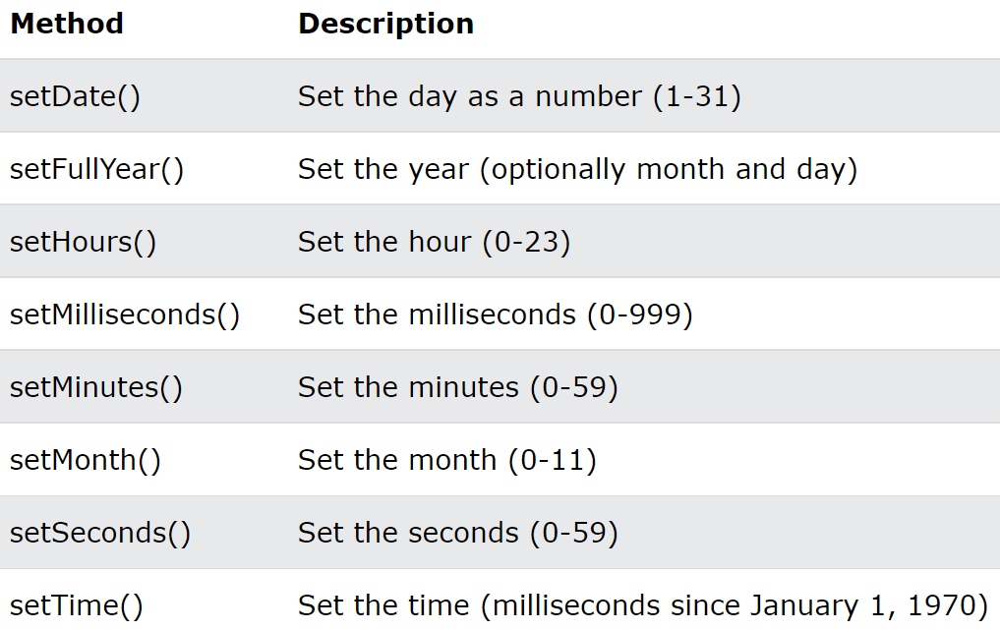

데이터를 set 하는 메서드를 보통 setters, get 하는 메서드를 getters 라고 한다
- Date 객체에는 날짜와 시간관련 메서드들이 동일한 이름을 구조화 되어 있음
-
get methods

-
set methods

Date() 객체가 사용이 불편한 부분이 있어 이를 보완하기 위해 자바스크립트 라이브러리를 많이 활용하는 편
- moment.js : 순수 자바스크립트 기반으로 날짜 데이털르 둘는 코드 라이브러리
- fullCalendar : 캘린터 UI까지 제공하는 프론트용 라이브러리 - 커스터마이징이 어려운 편이어서 별도의 라이브러리 공부가 필요함
1. 여러분의 생년월일로부터 오늘까지 며칠이 지났는지 출력해보세요
2. (optional) : 어떤 목표가 있다고 가정하고 목표 기한을 정한 후 며칠 남았는지 출력해보세요